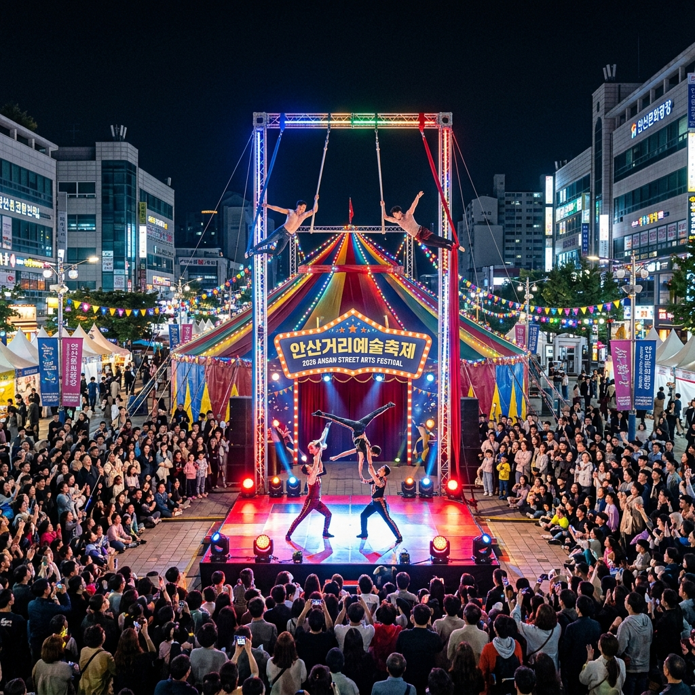
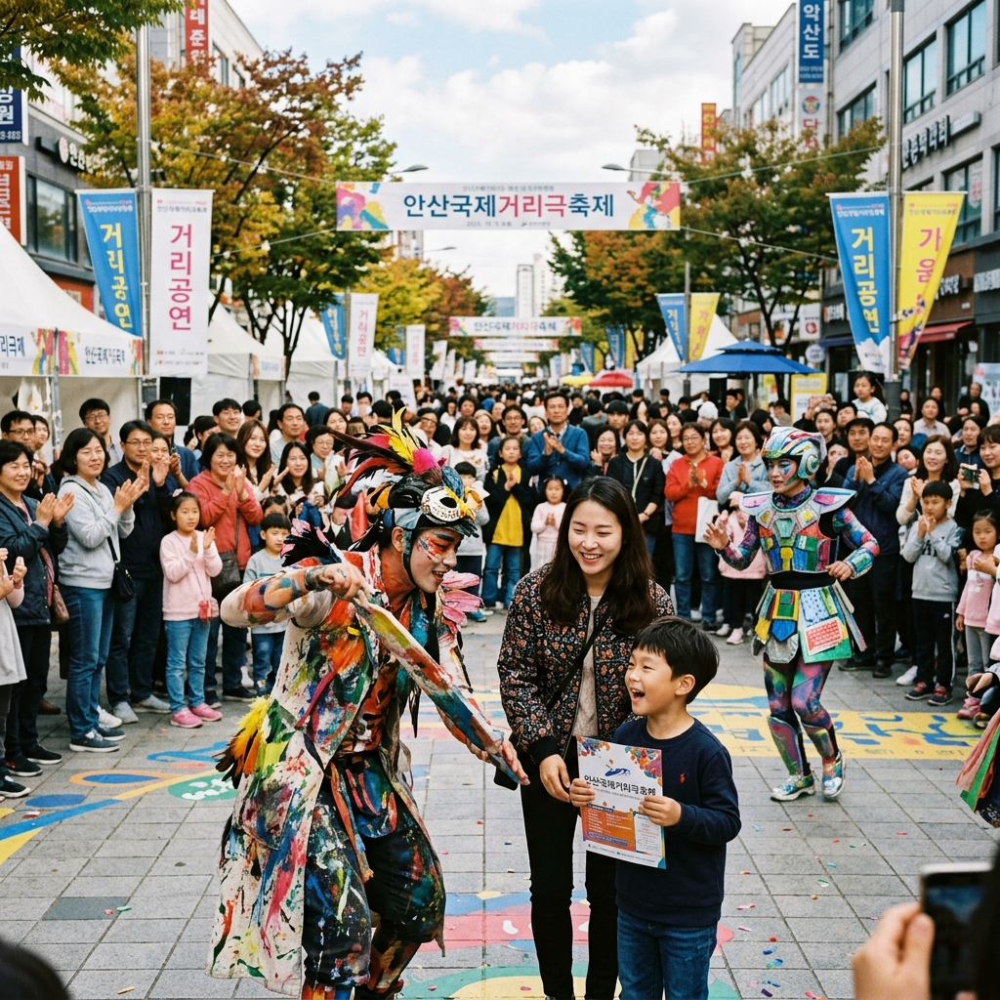
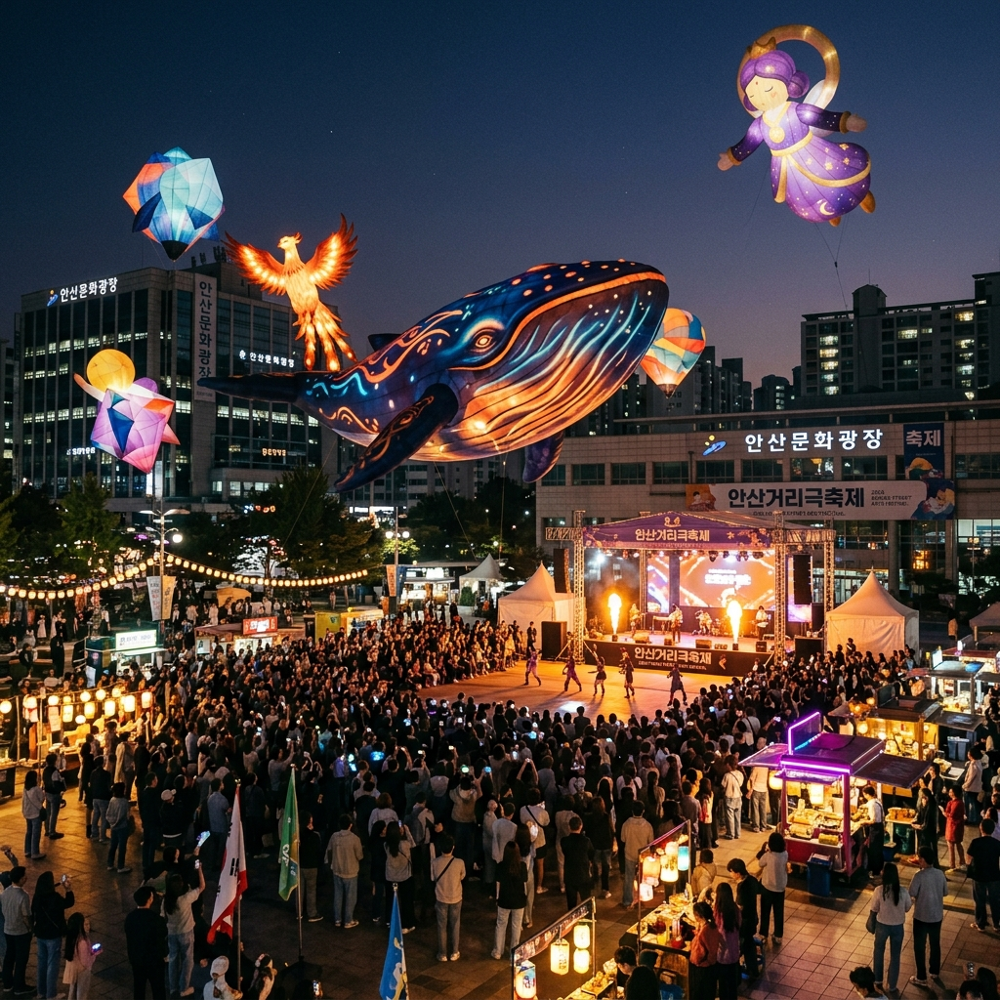

안산 국제거리극축제 2026 라인업 및 관람 가이드: 거리에서 만난 예술
평범했던 도시의 광장이 거대한 무대로 변신합니다! 2026년 5월 1일부터 3일까지, 안산문화광장 일대에서 제22회 안산국제거리극축제가 개최됩니다. 국내외 최정상급 아티스트들이 선보이는 서커스, 연극, 무용, 퍼포먼스가 어우러진 이번 축제는 온 가족이 함께 즐길 수 있는 최고의 예술 축제입니다. 안산의 봄을 화려하게 수놓을 거리극의 세계로 여러분을 초대합니다.
01 | 제22회 안산 국제거리극축제 개최 개요

안산문화광장을 가득 채운 화려한 야간 공연 현장 / AI 제작 이미지
안산 국제거리극축제는 안산시를 대표하는 문화 브랜드이자, 대한민국을 넘어 아시아의 대표적인 거리예술 축제로 자리 잡았습니다. 올해는 '거리에서 만난 예술, 세상을 잇다'라는 슬로건 아래, 5월 1일(금)부터 5월 3일(일)까지 3일간 안산문화광장과 안산호수공원 일대에서 화려하게 펼쳐집니다.
총 5개국에서 초청된 우수한 해외 작품들과 엄선된 국내 작품들이 어우러져 관람객들에게 신선한 충격과 감동을 선사할 예정입니다. 특히 이번 축제는 시민 참여형 프로그램을 대폭 강화하여, 단순히 보는 축제를 넘어 함께 호흡하고 즐기는 축제의 장으로 기획되었습니다. 안산의 심장부가 예술의 열기로 가득 차는 순간을 놓치지 마세요.
02 | 개막 공연: 동춘서커스의 버라이어티 쇼
축제의 서막을 알리는 개막 공연은 5월 1일 저녁 7시, 안산문화광장에서 '동춘서커스'의 무대로 시작됩니다. 90년 전통을 자랑하는 대한민국 대표 서커스단인 동춘서커스가 선보이는 버라이어티 쇼는 공중 곡예, 마술, 변검 등 눈을 뗄 수 없는 화려한 퍼포먼스로 구성됩니다.
전통적인 서커스 기술에 현대적인 연출을 더해 남녀노소 누구나 즐길 수 있는 환상적인 무대를 선사할 것입니다. 축제의 시작을 알리는 강렬한 에너지는 방문객들에게 안산 국제거리극축제만의 특별한 기대감을 심어주기에 충분합니다. 좌석이 한정되어 있으니 일찍 방문하여 자리를 선점하시길 권장합니다.
03 | 해외 초청작 라인업: 프랑스, 영국, 캐나다의 예술

시민들과 소통하며 펼쳐지는 역동적인 거리 예술 / AI 제작 이미지
올해는 글로벌 예술 트렌드를 반영한 해외 초청작들이 관람객들을 기다리고 있습니다. 프랑스의 대형 풍선 퍼포먼스 팀은 광장 하늘을 환상적인 조형물로 가득 채울 예정이며, 영국의 밤부 서커스는 대나무를 활용한 아찔한 곡예를 선보입니다.
특히 폐막 공연을 장식할 캐나다의 '서커스 칼라반떼(Cirque Kalabanté)'는 아프리카 예술과 서커스를 결합한 폭발적인 에너지의 공연으로 축제의 대미를 장식합니다. 인도의 랑골리 페인팅, 일본의 파이어쇼 등 각국의 문화를 거리 예술로 만나는 특별한 경험을 선사할 것입니다.
04 | 국내 공모작: 16개의 다채로운 예술 실험
국내 거리예술가들의 창의적인 시도도 돋보입니다. 공모를 통해 엄선된 16개의 국내 작품들은 연극, 무용, 마임 등 장르를 넘나드는 다채로운 구성을 자랑합니다. 낭만유랑극단의 '마차극장'은 이동식 무대에서 펼쳐지는 서정적인 이야기를 담고 있습니다.
또한, 환경 문제를 다룬 '인어인간'과 같은 사회적 메시지를 담은 공연들도 준비되어 있어 깊은 울림을 줍니다. 광장 곳곳에서 동시다발적으로 펼쳐지는 공연들은 관람객들에게 '예술의 바다'에 빠진 듯한 기분을 느끼게 해줄 것입니다. 공연 시간표를 미리 확인하여 나만의 관람 루트를 짜보시는 것을 추천합니다.
05 | 가족 방문객을 위한 'YES 키즈존'과 체험

환상적인 분위기를 연출하는 대형 예술 조형물 전시 / AI 제작 이미지
어린이 동반 가족들을 위한 특별한 배려도 잊지 않았습니다. 안산문화광장 한편에 마련된 'YES 키즈존'에서는 아이들이 마음껏 뛰어놀 수 있는 대형 정글짐과 놀이 실험실이 운영됩니다. 예술가와 함께 직접 소품을 만들거나 거리극의 주인공이 되어보는 체험 프로그램도 풍성합니다.
아이들의 눈높이에 맞춘 인형극과 마술 쇼는 축제 내내 끊이지 않는 웃음을 선사할 것입니다. 부모님들에게는 아이들이 안전하게 예술을 접할 수 있는 쉼터이자 배움의 장이 될 것입니다. 키즈존 인근에는 수유실과 휴게 공간이 마련되어 있어 가족 단위 관람객의 편의를 높였습니다.
06 | 청소년 공간: 랜덤댄스 스테이지와 힐링 존
젊은 세대의 열기를 담아낼 청소년 전용 공간도 주목할 만합니다. 최근 큰 인기를 끌고 있는 '랜덤댄스 스테이지'에서는 누구나 무대의 주인공이 되어 K-POP 댄스를 뽐낼 수 있습니다.
또한, 학업 스트레스를 날려버릴 수 있는 '스트레스 프리 존'과 청소년 예술 동아리들의 버스킹 공연도 함께 진행됩니다. 청소년들이 단순히 축제를 구경하는 것에 그치지 않고, 자신들의 문화를 직접 발산하고 공유하는 역동적인 공간으로 꾸며졌습니다. 안산의 젊은 에너지가 폭발하는 현장을 함께 느껴보세요.
07 | 안산거리예술마켓(ASAM)과 네트워킹
안산 국제거리극축제는 단순한 행사를 넘어 거리예술의 유통 거점 역할도 수행합니다. 4월 30일부터 5월 3일까지 열리는 '안산거리예술마켓(ASAM)'은 예술가와 기획자, 지자체 관계자들이 모여 작품을 사고파는 비즈니스의 장입니다.
일반 관람객들은 거리예술의 제작 과정을 엿보거나 작가들과 대화할 수 있는 기회를 가질 수 있습니다. 예술이 어떻게 대중과 만나고 하나의 산업으로 성장하는지 확인할 수 있는 유익한 프로그램입니다. 안산이 왜 대한민국 거리예술의 메카인지를 보여주는 대목이기도 합니다.
08 | 교통 통제 및 주차 정보: 미리 확인하세요!
원활한 축제 진행을 위해 4월 29일 밤부터 5월 4일 새벽까지 안산문화광장 주변 도로의 차량 진입이 전면 통제됩니다. 자가용 이용 시 큰 불편이 예상되므로 가급적 대중교통 이용을 권장합니다. 지하철 4호선 고잔역이나 중앙역에서 도보로 10분 내외면 행사장 도착이 가능합니다.
부득이하게 차량을 이용하신다면 고잔역 환승 주차장, 안산호수공원 주차장 등 인근 공영 주차장을 활용해 주세요. 축제 기간 동안 대부분의 공영 주차장이 무료로 개방됩니다. 공유 모빌리티(쏘카, 일레클) 할인 쿠폰도 배포되니 앱을 통해 스마트하게 이동해 보세요.
09 | 방문 팁: 준비물과 성숙한 관람 매너
축제를 완벽하게 즐기기 위한 몇 가지 팁을 전해드립니다. 첫째, 야외 공연 특성상 돗자리와 휴대용 의자가 있으면 매우 편리합니다. 둘째, 낮에는 햇빛이 강할 수 있으니 선글라스와 모자를 준비하시고, 밤에는 쌀쌀할 수 있으니 겉옷을 챙기세요.
셋째, 공연 중에는 다른 관람객의 시야를 방해하지 않도록 배려해 주시고, 공연이 끝난 뒤에는 뜨거운 박수로 아티스트를 응원해 주세요. 마지막으로, 자신이 머문 자리의 쓰레기는 직접 치우는 깨끗한 축제 문화를 만들어 주세요. 예술과 시민이 하나 되는 안산에서 잊지 못할 5월의 추억을 만드시길 바랍니다.
#안산국제거리극축제
#2026안산축제
#거리극축제라인업
#안산문화광장
#서커스공연
#5월가볼만한곳
#안산데이트코스
#가족나들이추천
#거리예술축제
#안산여행